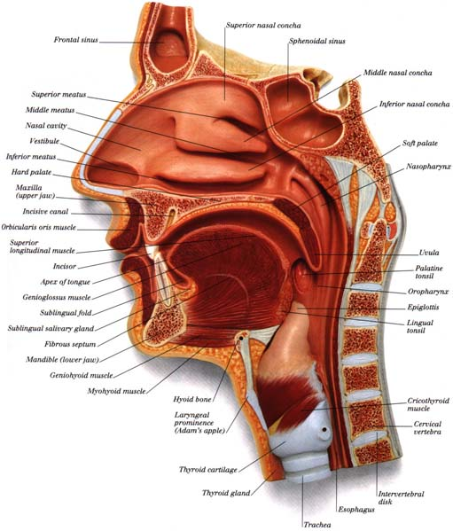
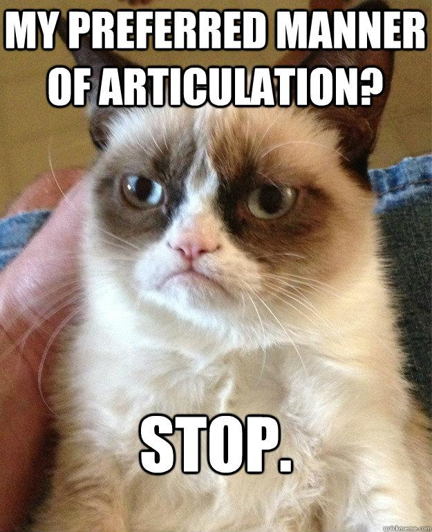
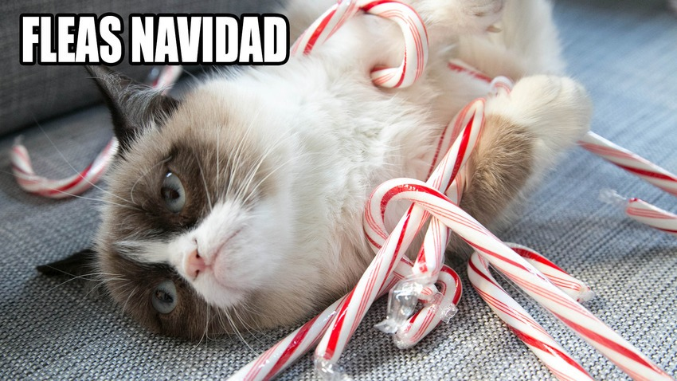

<lang>Xhosa</lang><br><ldata>Niger-Congo:Bantu - South Africa</ldata> <iframe data-autoplay width="840" height="500" src="http://www.youtube.com/embed/Qg4Fp-A7IRw"></iframe> Miriam Makeba - "The Click Song" --- # Sounds of the World's Languages! ### LING 1020 - Will Styler --- Today's lecture is meant to help you out, not to be memorized! * *You won't be expected to know phonetic terms for the test!* * I just want you to know how to figure out how to make a sound --- ## Want to incur Will's wrath? * It's easy! Just say... --- <lang>English</lang><br><ldata>IE:Germanic, All over the damned place</ldata> **"I'm not even gonna try and pronounce that."** * 'I embrace failure!' * 'I don't want to learn!' * 'I hereby abandon my linguistic aspirations' * 'Will, I summon thy righteous wrath upon me' --- ### It's always better to try! * Trying provides practice * After trying, you'll be more likely to do * Sooner or later, you won't have a choice * ... but you need to know how to start trying! --- ### The Big Questions * How does speech work? * How do we describe speech sounds? * How do languages around the world differ in terms of sound? * What's with the clicking in Africa? * Are there sounds that "English speakers just can't produce"? * Are there other across-language differences in terms of sound? --- ## How does speech work? --- ### The Speech Process * Flapping bits of meat inside your head * This creates vibrations in the air * The ear picks these up, and inteprets them as speech. * This is studied in **Phonetics** * *For more info about all this, take LING 2000 and 3100!* --- ### Flapping bits of meat ("articulation") <img class="big" src="phonmedia/nasalsagittal.jpg"> --- <iframe data-autoplay width="840" height="500" src="http://www.youtube.com/embed/0-aEN2xHBCc"></iframe> --- <iframe data-autoplay width="840" height="500" src="http://www.youtube.com/embed/1FTXmuBP3QE"></iframe> --- <img class="big" src="humorimg/ohgodwhy.jpg"> --- ## How do we describe speech sounds? --- We're going to focus on consonants today. <small>(For the awesomeness of vowels, take LING 3100 or ask me in office hours!)</small> <!-- .element: class="fragment" --> --- ### Describing Consonants * We need to know three things: * **Place**: Where is the sound made? * **Manner**: What are we doing there? * **Voicing**: Are we making voicing? --- ### Place  --- ### Place <img class="big" src="phonmedia/sagittal_labeled.png"> --- ### Place * **Bilabial**: As in "***b***oy" * **Labiodental**: As in "***V***ote" * **Alveolar**: As in "***T***o***t***e***s***!" * **Postalveolar**: As in "***J***u***dge***" * **Velar**: As in "Ta***c***o***c***at" * **Glottal**: As in "Uh***-***oh!" --- ### "Michael Bay destroyed my childhood" <img class="big" src="humorimg/optimusfacepalm.jpg"> <!-- .element: class="fragment" --> --- ### Manner * **Stops**: Stop the airflow * **Fricatives**: Constrict the airflow to make sounds * **Nasals**: Channel the air out the nose * **Approximants**: Bring the tongue *toward* the place * **Laterals**: Channel air *around* the tongue ---  --- ### "Grumpy Cat hates humans"  <!-- .element: class="fragment" --> --- ### Voicing * Is the larynx buzzing, or not? --- ## Let's pretend we're snakes eating bees! <img class="big" src="phonmedia/snakesbees.jpg"> --- Once we've organized sounds by place, manner, and voicing, we have... --- ## The International Phonetic Alphabet! <a href="phonmedia/IPA_chart_2005.pdf"><img class="big" src="phonmedia/ipa_wholechart.png"></a> --- English Consonants <img src="phonmedia/ipa_consonants_english.png"> --- <img src="phonmedia/ipa_consonants.png"> --- ### Other Places of Articulation * ***Retroflex***: Curl the tip of your tongue back * ***Palatal***: Make an "eeeeee" sound, then raise your tongue. * Or pretend you're an angry cat. * ***Uvular***: Bring the back of the tongue to your Uvula * ***Pharyngeal***: Bring the back of your tongue to the back of your throat --- ### Can't figure out where in the mouth that is? Ask [Sammy the Interactive Sagittal Section](http://homes.chass.utoronto.ca/~danhall/phonetics/sammy.html)! --- ### Other Manners of Articulation * ***Trill***: Use the air to flap your tongue rapidly * ***Tap***: Throw your tongue against the roof of your mouth * ***Lateral Fricative***: Blow air quickly around the sides of your tongue! --- ## Vowels! --- Languages differ in terms of the number of available vowels --- ### Arabic has three vowels * /i, a, u/ * (They do have meaningful vowel length, though!) --- ### Languages often have five vowels * /i, e, a, o, u/ * (as in Spanish, "misa, mesa, masa, mosca, muda") --- ### English has way more than five vowels! * / i, ɪ, e, ɛ, æ, ə, ʌ, ɑ, ɔ, ʊ, u / * beet, bit, bait, bet, bat, sof**a**, but, bot, bought, book, boot --- ### There are other vowels that we don't have! <img class="big" src="phonmedia/ipa_vowels.png"> --- "Are there any *types* of sounds that we don't have?" * **Yep!** --- ### Types of sounds not found in English <img src="phonmedia/ipa_nonpulmonics.png"> --- For more IPA info, see the [resources listing](http://savethevowels.org/resources/#ipa) on the course site! --- ## "People in Africa speak only with clicks" --- <img class="big" src="humorimg/false.jpg"> --- ### Clicks in Africa * Clicks are used extensively in Khoisan languages * (spoken by ~400,000 people) * They've also been borrowed into Zulu and Xhosa, both Bantu languages (within Niger-congo) * (~17.6 million speakers) * This means that only ~1% of Africans speak a language where there are clicks * All of these languages have lots of non-click sounds! --- <lang>San</lang><br><ldata>Khoisan - Namibia</ldata> <iframe data-autoplay width="840" height="500" src="http://www.youtube.com/embed/W6WO5XabD-s"></iframe> --- <img class="big" src="humorimg/omg.jpg"> --- ## "I could never do that!" * Yes, you can. --- <lang>Xhosa</lang><br><ldata>Niger-Congo:Bantu - South Africa</ldata> <iframe data-autoplay width="840" height="500" src="http://www.youtube.com/embed/31zzMb3U0iY"></iframe> --- # Anybody can pronounce any language! --- ### Speech organs are universal * There is not a meaningful difference between your vocal tract and a !Xoo speaker's * The only difference between humans is practice! * It's easier if you start off speaking the language * There are no sounds English speakers "just can't produce", *with practice*. --- ### ... but that doesn't mean it's easy * Make a Voiceless Velar Fricative /x/ (as in "Chanuakkah", "Challah", "Bach") * Make a voiced alveolar trill /r/ (the Spanish Rolled R) * Make a voiceless palatal fricative (ç) (as in an angry cat) * Make a voiceless alveolar lateral fricative (ɬ) (as in "nahuatl") * Make a /!/ click between two vowels (/a!a/) --- # Are there other differences in how we use sound? * Yep! --- ## Tone Changes in pitch during the word change the meaning of the word --- ### Level Tone "High" vs. "Low" (sometimes "mid" or "rising/falling") --- <lang>Zarma (Djerma)</lang><br><ldata>Nilo-Saharan:Songhay - Niger</ldata> Yesterday - "bi" Wound - "bi" --- <section data-background="img/clickerbkgrnd.png"></section> <lang>Zarma (Djerma)</lang><br><ldata>Nilo-Saharan:Songhay - Niger</ldata> Yesterday - "bi" Wound - "bi" <audio data-autoplay src="phonmedia/zarma_tonecontrast.mp3"></audio> * **Which has the high tone?** * A - "Yesterday" * B - "Wound" --- <section data-background="img/clickerbkgrnd.png"></section> <lang>Zarma (Djerma)</lang><br><ldata>Nilo-Saharan:Songhay - Niger</ldata> Yesterday - "bi" Wound - "bi" **Which has the high tone?** A - "Yesterday" B - "Wound" <audio data-autoplay src="phonmedia/zarma_tonecontrast.mp3"></audio> --- <section data-background="img/clickerbkgrnd.png"></section> <lang>Zarma (Djerma)</lang><br><ldata>Nilo-Saharan:Songhay - Niger</ldata> Yesterday - "bi" - High Wound - "bi" - Low Dark - "bi" - Short vowel **Which has the high tone?** <correct>A - "Yesterday"</correct> B - "Wound" <audio data-autoplay src="phonmedia/zarma_tonecontrast.mp3"></audio> --- ### Contour Tones Pitch patterns change meaning --- <lang>Mandarin Chinese</lang><br><ldata>Sino-Tibetan - China</ldata> <iframe data-autoplay width="840" height="500" src="http://www.youtube.com/embed/orx53ieqEI4"></iframe> --- <lang>Mandarin Chinese</lang><br><ldata>Sino-Tibetan - China</ldata> # 妈 麻 马 骂 吗 'mother bother horse scold QUESTION' "Mom is bothered by the horse's scolding" --- ### Voicing Types Differences in the configuration of the vocal folds resulting in different voicing patterns. --- ### Differences in Voicing Type * ***Modal Voicing***: What we mostly use in English * ***Creaky Voicing***: Using less air than usual * ***Breathy Voicing***: Using more air than usual --- Creaky and breathy voicing are used *stylistically* in English --- ### Contrastive Vowel length When the duration of the vowel can change the meaning of the word --- <lang>Arabic</lang><br><ldata>AA:Semitic - All over</ldata> عِد /ʕidd/ - 'promise' عِيد /ʕiːd/ - 'feast' عُد /ʕudd/ - 'come back!' عُود /ʕuːd/ - 'lute' عَد /ʕadd/ - 'counted' عَاد /ʕaːd/ - 'came back' --- ### This <iframe data-autoplay width="840" height="500" src="http://www.youtube.com/embed/URgdIAz4QNg"></iframe> --- ### Anything else? --- ## Phonotactics The study of what combinations of sounds are 'legal' in a language --- <lang>Japanese</lang><br><ldata>Japonic - Japan</ldata> <img src="phonmedia/japanese_christmas.jpg"> ‘Merry Christmas' - merii kurisumasu <small>([Image and Sound Credit](http://japanese.about.com/library/blqow33.htm))</small> --- <lang>Japanese</lang><br><ldata>Japonic - Japan</ldata> <img src="phonmedia/japanese_christmas.jpg"> ‘Merry Christmas' - merii kurisumasu <small>([Image and Sound Credit](http://japanese.about.com/library/blqow33.htm))</small> * *Japanese does not allow anything but consonant-vowel-consonant-vowel* <audio data-autoplay src="phonmedia/japanese_christmas.mp3"></audio> --- ### Borrowings When a language borrows a word from another language --- Languages often adapt words to fit their rules when borrowing. --- ## Hawaiian Borrowings! --- <img class="big" src="phonmedia/enhawaiianborrowings.png"> --- ### Iniseka * Insect --- ### Elepani * Elephant --- ### hipa * Sheep --- ### kaioke * Coyote --- ### Kanakalu * Kangaroo --- ### Lakuna * Raccoon --- ### Nupepa * Newspaper --- ### Mokokaikala * Motorcycle --- ### Kakalina * Gasoline --- ### Kelepona * Telephone --- ### Kolokalaiwa * Screwdriver --- ## Some languages allow more complexity! --- <lang>English</lang><br><ldata>I-E, Germanic, West Germanic - Damned Near Everywhere</ldata> 'Strengths' (/stɹɛŋkθs/) --- <lang>Russian</lang><br><ldata>I-E, Slavic, East - Russia</ldata> ‘Glance’ - Всгляд (/vzglʲat/) ‘Of Construction’ - строительств (/strʌˈʲitʲɛlʲstf/) --- <lang>Czech</lang><br><ldata>I-E, Slavic, West, Czech-Slovak - The Czech Republic</ldata> Strč prst skrz krk ‘Stick your finger down your throat’ --- ### Every language has arbitrary rules * End a word with a pronounced /h/ ("Bah") * Say the /ŋ/ in "ring" at the start of a word. ("Ngöndro") * End a word with the vowel in "bet" or "book". ("Saké") * English has "s", "k", "v", but say "Moskva" --- ### There's a LOT more to sound-related differences... <img class="big" src="img/tipoficeberg.jpg"> --- ### ...but that's LING 3100's job! <img class="big" src="img/plug.jpg"> --- ### For today, just know... * Speech is all about place, manner, and voicing of meat-flapping * Languages all use different sets of sounds * Not all African languages are clicky, damnit * Anybody can make any speech sound, with practice * Tone is awesome * Different languages allow different combinations of sounds * Phonetics is awesome! --- <huge>Thank you!</huge> http://savethevowels.org/talks/lotw_3.html